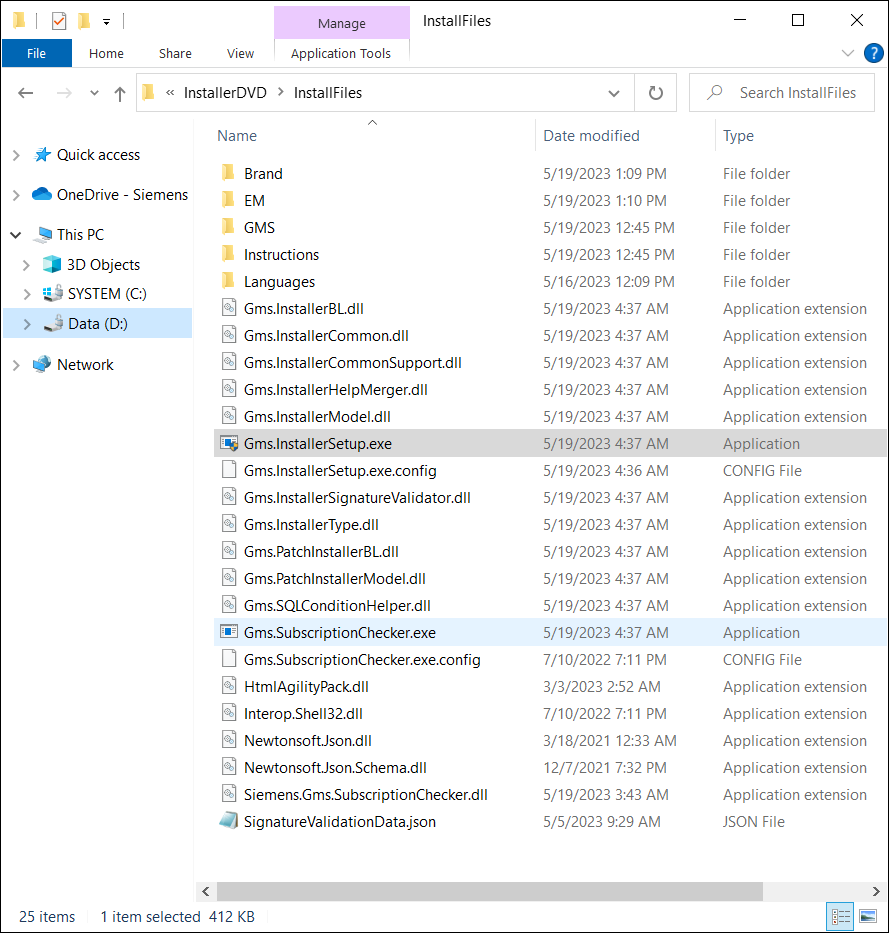

Obtain and Verify the Software Distribution
Before you perform upgrade the very first thing is to obtain the Version 5.0 software distribution of Desigo CC.
The software distribution contains the necessary files for installing all components of the Desigo CC system. Once you download the Desigo CC software, you should review the distribution media.
NOTICE

Installations from Remote Locations:
It is not recommended to install Desigo CC (using any installation mode) from a remote location (for example, network location) because of path name length restrictions.
Install Desigo CC locally from software distribution, or first download the Installer files from a remote location to the local workstation.
For upgrading the existing installation, the software distribution must contain the following files and folders along with the other files inside the InstallFiles directory. The distribution media does not include some third-party software programs and files for operating system service pack upgrades. You can find these files at the manufacturer’s web site. These files are indicated in the appropriate sections.

During upgrade, the Installer detects the previously installed version of Desigo CC installation, including all its prerequisites, extensions and language packs and then upgrades them to the required version (V7.0). You can also install additional extensions or add new language packs.
You must consider the following points before performing upgrade:
- Installation Mode: Upgrade can be performed using the custom installation mode, silent\semi-automatic installation.
- Setup Type: You can upgrade the installation of all the three existing setup types - Server, Client and FEP. After upgrade, you must upgrade the Server, Client/FEP project to work with Desigo CC . Changing the already installed setup type during upgrade is not possible.
- Brand: Verify that the software distribution contains the required and already installed Brand folder and it is signed.
- Installation Drive: For the upgrade it is not possible to change the installation drive.
- Extensions: Verify that the EM folder contains all the already installed extensions along with their dependent or parent extensions.
- Verify all installed extensions along with their dependent or parent extensions are available and valid for upgrade. Otherwise the upgrade cannot not proceed.
- A mandatory extension is always upgraded/installed and is not available for selection/deselection during upgrade/installation. Moreover, its parent extension (mandatory or non-mandatory) is not displayed for selection/deselection and are always installed.
- For Semi-automatic and Silent upgrade, you must specify the extensions that you want to have installed in the GMS Platform.xml file located at ..\InstallerDVD\InstallFiles\Instructions. For example, to add the extension from other location than the distribution media, you need to configure the path of these extensions in the section [ExternalEMsPath] and the EM name must be added in the section [EMs] of the GMS Platform.xml file. Make sure that the parent extensions of the external extensions to be added are either available in the distribution media or at the path provided in the attribute [ExternalEMsPath] of the GMS Platform.xml file. Otherwise, the Installer skips installation of externally added extension if the parent extension of externally added extension is not available/is inconsistent.
- The PostInstallation folder, if present, contains the post-installation steps specific to the extension for upgrade. Ensure that the post-installation steps for an extension is configured in the [EMName]PostInstallationConfig.txt file, and are valid and enabled by modifying the extension from .txt to .xml. Additionally, you must also ensure that the parent or associated extension‘s post-installation steps are valid and enabled for execution during the upgrade. For more information, see Verify and Enable a Post-Installation Step for Execution. During upgrade of an extension, the Post Installation folder is copied to ..\GMSMainProject and the post installation steps are executed from ..\GMSMainProject\PostInstallation\EM\[EM Name]. Before copying the Post Installation folder for the EM to be upgraded, the existing Post Installation folder is deleted.
- GMS Folder: Verify that the mandatory en-US language pack, the prerequisites, such as WinCC OA 3.19, EULA and README files, GMSConfig.xml file, Siemens.GmsPlatform.msi, ProjTemplates are available.
- Prerequisites: During upgrade, the Installer detects the previously installed version of Desigo CC installation, including all its prerequisites, and then upgrades them to the required version.
For example:
- If Microsoft SQL Server 2014 - Express Edition having GMS_HDB_EXPRESS instance is installed then Microsoft SQL Server 2022 - Express Edition is updated and treated as mandatory prerequisites.
- If Microsoft SQL Server 2019 - Express Edition having GMS_HDB_EXPRESS instance is installed then Microsoft SQL Server 2022 - Express Edition is updated and treated as mandatory prerequisites.
- If GMS_HDB_EXPRESS instance is not found then Microsoft SQL Server 2022 - Express Edition is optional and treated as non-mandatory prerequisites. - Even if you skip the SQL installation during the Server upgrade, the three SQL Client component prerequisites, Microsoft SQL Server 2012 - Native Client, Microsoft SQL Server 2016 - System CLR Types and Microsoft SQL Server 2016 - Management Objects are installed/upgraded on the Server in the same order.

If you want to use the SQL, other than the default (Microsoft SQL Server 2022 - Express Edition) which is installed by the Installer, the software installation, licensing, administration, and maintenance of Microsoft SQL Server regular editions is the responsibility of the customer. For instructions on manually installing versions of the SQL server, see Microsoft Windows help or visit http://support.microsoft.com.
If you have installed higher editions of SQL Server, for example Professional or Enterprise edition, then you need to consider purchasing upgrade to Microsoft SQL Server 2022 - Express Edition. Otherwise, the HDB is limited to 10 GB size and you cannot restore the large backup to Microsoft SQL Server 2022 - Express Edition.Also, it is the responsibility of the customer to update the SQL Server whenever the latest GDR or CU is available from Microsoft.
Recommendation is GDR over CU. This is applicable both for default Microsoft SQL Server 2022 - Express Edition installed by the Installer as well as for Microsoft SQL Server regular editions installed manually by the customer- Verify that the Languages folder contains the language packs for all the installed languages. Additionally, it can contain more language packs for installation. However, you must add only required language packs.
- Verify that the Upgrades folder contains the EP and SR folders.
- The EP folder contains the EM and Languages folders that have the software update for the available extension.
- The SR folder contains the GMS and Languages folders with service release and the platform language pack.
- (Optional) Installation of patches for Platform and extensions: Patches for platform and extensions that are present in the QualityUpdates or Hotfixes folder are considered for upgrade. Installer will consider the patches for the selected extensions for upgrade only if the patches of compatible version are present in the QualityUpdates or Hotfixes folder in the Installation media.
- QualityUpdates folder: Verify that the QualityUpdates folder is present in the Installation media at ...\InstallerDVD\InstallFiles in parallel to the GmsInstallerSetup.exe file. The QualityUpdatesConfig.xml file must also be present in the QualityUpdates folder.
- Hotfixes folder: Verify that the Hotfixes folder is present in the installation media at ...\InstallerDVD\InstallFiles in parallel to the GmsInstallerSetup.exe file. To upgrade an extension patch or a platform patch, the [EM]PatchConfig.xml file or the GMSPatchConfig.xml file must have the UpdateLabel attribute.